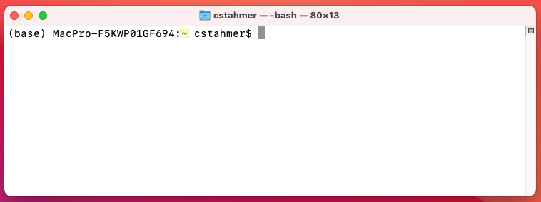
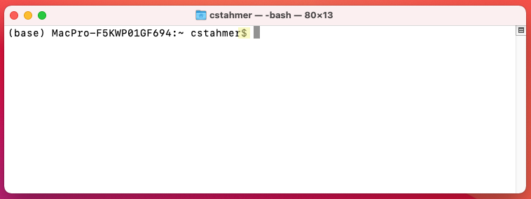
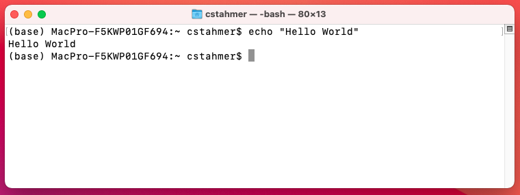
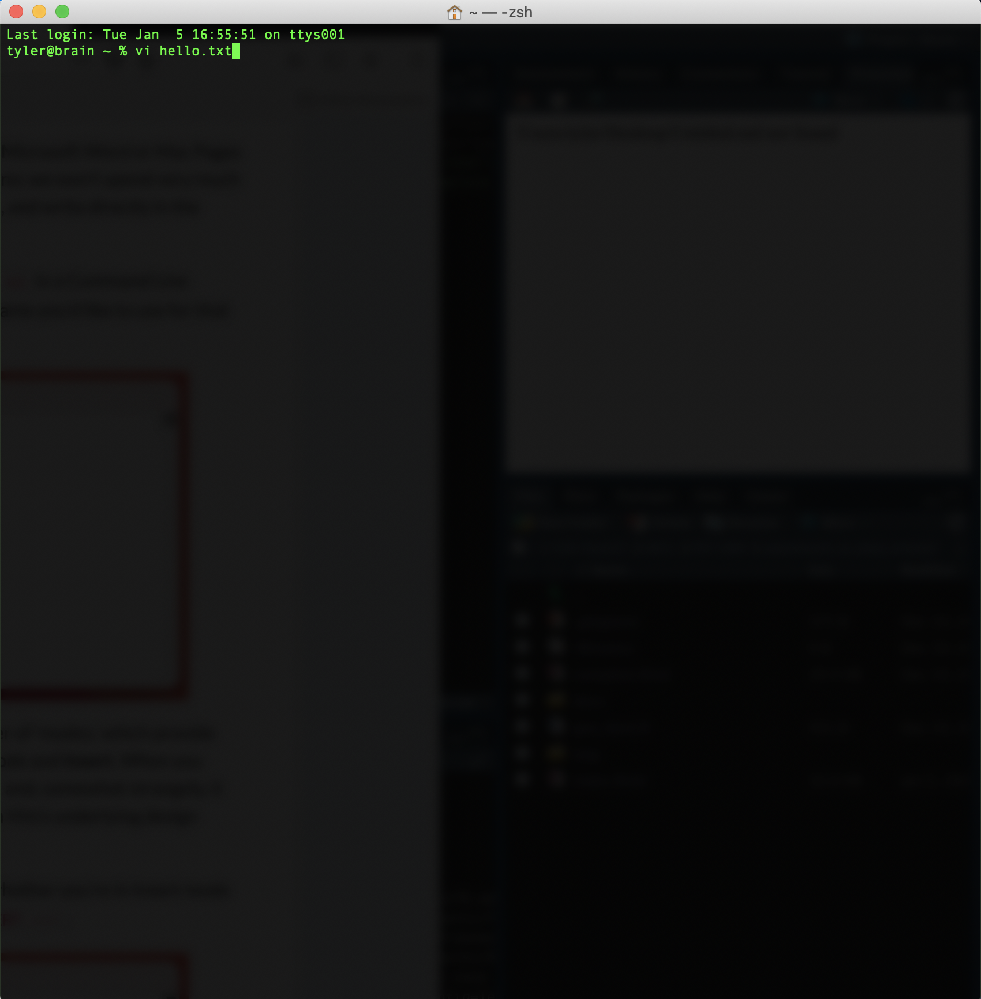

1 Working with the Command Line
Most users interact with their computer through a Graphical User Interface (GUI) that allows them to use a mouse, keyboard, and graphical elements on screen (such as file menus, pictures of folders and files, etc.) to perform their work. Users tend to conflate their Operating System and their GUI because computer hardware and software manufacturers tightly pack these two concerns as a convenience to users. But the Windows 10 or Mac Big Sur operating system that makes your computer work and the Windows 10 or Mac Big Sur GUI that you interact with are, in fact completely different and separable software packages and it is possible to use different methods/software to interact with your computer than the stock, tightly coupled GUI that launches automatically when you turn on your computer.
Because computer manufacturers like Windows and Mac devote so many resources to the development of their system GUIs, there are few viable (at present, none, commercially available) competing GUIs for these platforms. This is not the case in the Linux world, however, where users have several system GUI packages from which to choose and can seamlessly switch between them as desired. Despite the lack of competition/choice on the GUI front when it comes to interacting with your computer, there are other, non-graphical ways of communicating directly with your operating system that exist for all operating systems. We call these “Command Line” interfaces. The Command Line offers a text-only, non graphical means of interacting with your computer. In the early days of computing, all user interaction with the computer happened at the command line. In the current days of graphical user interfaces, using the Command Line requires you to launch a special program that provides Command Line access.
Mac users will use an application called “Terminal” which ships by default with the Mac operating system. To launch the Terminal application, go to:
Applications -> Utilities -> Terminal
When you launch the application, you will see something like this:

Windows users will use an application called Git Bash, which was installed on your system when you installed Git. To launch Git Bash, go to:
Click on the Windows Start Menu and search for “Git Bash”
Alternatively,
Click on the Windows Start Menu, select Programs, and browse to Git Bash
When you launch the application, you will see something like this:

1.1 Interacting with the Command Line
While it can look intimidating to those raised on the GUI, working with the Command Line is actually quite simple. Instead of pointing and clicking on things to make them happen, you type written commands.
The figure below shows a new, empty Command Line Interface in the Mac Terminal application

The Command Line prompt contains a lot of valuable information. The beginning of the line, “(base) MacPro-F5KWP01GF694” tells us exactly which computer we are communication with. This may seem redundant, but it is actually possible to interact with computers other than the one you are typing on by connecting to them via the Command Line over the network.

The bit of information after the colon, in this example the “~” character tells us where in the computer’s filesystem we are. We’ll learn more about this later, for now you need to undersant that the “~” character means that you are in your home directory.

The next piece of information we are given is the username under which we are logged into the computer, in this case, my local username, “cstahmer”.

After the username, we see the “$” character. This is known as the Command Prompt. It is an indicator that the Command Line application is waiting for you to enter something. The Command Prompt character is used througout these materials when giving command examples. When working through materials, DO NOT ENTER the Command Prompt. It will already be there telling you that the computer is ready to receive your command.

Depending on your system and/or Command Line interface, you may or may not also see a solid or flashing box that appears after the Command Prompt. This is a Cursor Position Indicator, which tells you where the current cursor is in the terminal. This is useful if you need to go gack and correct an error. Generally speaking, you can’t click a mouse in a terminal app to edit text. You need to use your computer’s right and left arrows to move the cursor to the correct location and then make your edit.

As noted earlier, we interact with the Command Line by typing commands. The figure below shows an example of a simple command, “echo” being entered into the Command Line.

The “echo” command prints back to screen any text that you supply to the command It literally echoes your text. To execute, this or any command, you simply hit the “return” or “enter” key on your keyboard. You’ll see that when you execute a Command Line command the sytem performs the indicated operation, prints any output from the operation to screen and then delivers a new Command Line prompt.

Note that depending on your particular system and/or Command Line interface, things might look slightly different on your computer. However, the basic presentation and function as described above will be the same.
1.2 Common Command Line Commands
During our hands-on, in-class session we will practice using the following Command Line commands. Be prepared to have this page ready as a reference during class to make things easier.
| Command Name | Function | |
|---|---|---|
| ls | List | Lists all files in the current directory. |
| ls -l | List with Long flag | Lists additional information about each file. |
| ls -a | List with All flag | Lists all files, including hidden files. |
| pwd | Print Working Directory | Prints the current working directory. |
| mkdir | Make Directory | Creates a new file directory. |
| cd | Change Directory | Navigates to another directory on the file system. |
| mv | Move | Moves files. |
| cp | Copy | Copies files. |
| rm | Remove/delete | Deletes files. |
For a more complete list of Unix Commands, see the Unix Cheat Sheet.
1.3 Command Line Text Editors
The Command Line also features a variety of different text editors, similar in nature to Microsoft Word or Mac Pages but much more stripped down. These editors are only accessible from the Command Line; we won’t spend very much time with them, but it is important to know how to use them so that you can open, read, and write directly in the Command Line window.
Macs and Git Bash both ship with a text editor called Vim (other common editors include Emacs and Nano). To open a file with vim, type vi in a Command Line window, followed by the filename. If you want to create a new file, simply type the filename you’d like to use for that file after vi.

Vim works a bit differently than other text editors and word processors. It has a number of ‘modes,’ which provide different forms of interaction with a file’s data. We will focus on two modes, Normal mode and Insert. When you open a file with Vim, the program starts in Normal mode. This mode is command-based and, somewhat strangely, it doesn’t let you insert text directly in the document (the reasons for this have to do with Vim’s underlying design philosophy: we edit text more than we write it on the Command Line).
To insert text in your document, switch to Insert mode by pressing i. You can check whether you’re in Insert mode by looking at the bottom left hand portion of the window, which should read -- INSERT --.

Once you are done inserting text, pressing ESC (the Escape key) will bring you back to Normal mode. From here, you can save and quit your file, though these actions differ from other text editors and word processors: saving and quitting with Vim works through a sequence of key commands (or chords), which you enter from Normal mode.
To save a file in Vim, make sure you are in Normal mode and then enter :w. Note the colon, which must be included. After you’ve entered this key sequence, in the bottom left hand corner of your window you should see “[filename] XL, XC written” (L stands for “lines” and C stands for “characters”).

To quit Vim, enter :q. This should take you back to your Command Line and, if you have created a new file, you will now see that file in your window.
If you don’t want to save the changes you’ve made in a file, you can toss them out by typing :q! in place of :w and then :q. Also, in Vim key sequences for save, quit, and hundreds of other commands can be chained together. For example, instead of separately inputting :w and :q to save and quite a file, you can use :wq, which will produce the same effect. There are dozens of base commands like this in Vim, and the program can be customized far beyond what we need for our class. More information about this text editor can be found here.
1.4 Basic Vim Commands
| Command | Function |
|---|---|
| esc | Enter Normal mode. |
| i | Enter Insert mdoe. |
| :w | Save. |
| :q | Quit. |
| :q! | Quit without saving. |
For a more complete list of Vim commands, see this Cheat Sheet.